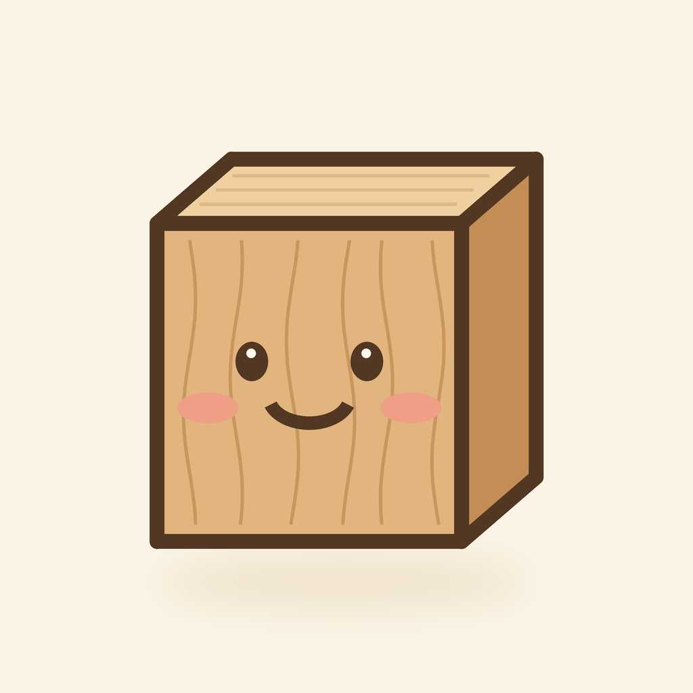

プライバシーポリシー
最終更新日：2026年10月5日
Kotsumi（以下「本アプリ」）は、個人開発の習慣化・時間管理アプリです。本アプリが扱う情報と、その使い方を説明します。
1. 取得する情報
- 匿名のユーザーID（起動時に自動で作られる、個人を特定しない識別子）
- あなたが入力した内容：目標（例：読書30分）、記録（いつ・何を・何分）、タスクとその期限、今日の予定
- 設定：起きる・寝る・しごとの時間と曜日、通知のオン／オフ
氏名・メールアドレス・電話番号・位置情報・連絡先・写真などは取得しません。
2. 利用目的
- 提案・予定・記録・タスクなど、本アプリの機能を提供するため
- アプリを入れなおしたり、別の画面に移ったりしても内容を保てるようにするため
広告の表示や、ほかのアプリ・サイトをまたいだ追跡（トラッキング）には使いません。
3. 外部サービス
データの保存に Google Firebase（Firebase Authentication・Cloud Firestore）を使っています。データは Google のプライバシーポリシーに基づいて管理されます。Google のプライバシーポリシー
4. 通知
通知はすべて端末内で予約するローカル通知です。通知の内容を外部に送ることはありません。
5. 第三者への提供
法令に基づく場合を除き、情報を第三者に提供・販売しません。
6. データの削除
アプリの「目標」画面のいちばん下にある「すべてのデータを消す」から、保存されているすべてのデータとアカウントを削除できます。
7. 安全管理
保存データは Firebase のセキュリティルールにより、本人以外が読み書きできないよう保護しています。
8. お問い合わせ
9. 改定
本ポリシーは必要に応じて改定することがあります。改定した場合は、このページでお知らせします。